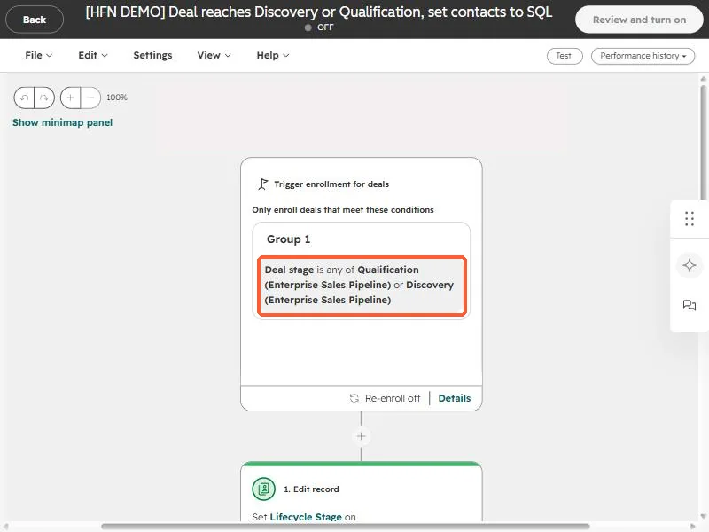
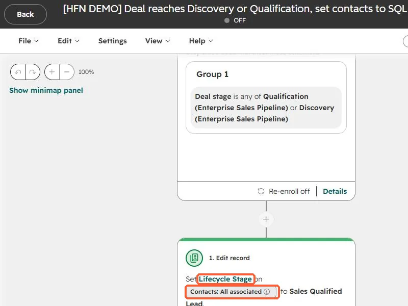

Short answer
SQL reports count contacts that reached the Sales Qualified Lead lifecycle stage. If reps move deals but nobody updates the contact, the count stays at zero. Build a deal-based workflow that sets Lifecycle stage to Sales Qualified Lead on all associated contacts when the deal reaches the stage you consider qualified. Watch one trap: the default lifecycle property only moves forward automatically.
1. Why the report says zero
In an audit of one of my own portals, deals were being created and worked while the contacts behind them never changed lifecycle stage. HubSpot's lifecycle stage is a property on the contact. A report of SQLs reads that property. If it is never set to Sales Qualified Lead, the number is zero no matter how healthy the pipeline looks. The fix is to connect the two: the deal stage is the event, the contact lifecycle stage is the result.
2. Trigger on the deal stage
In Workflows create a deal-based workflow. Enroll deals when Deal stage is any of the stages that mean "this is qualified" for you. In my demo it is Qualification or Discovery in the enterprise pipeline.


3. Update the associated contacts
Add an Edit record action, pick Lifecycle stage, and in the record picker choose Contacts: All associated. Set the value to Sales Qualified Lead.


HubSpot's default lifecycle stage property can only be moved forward automatically. To set an earlier value you must clear it first, manually or in a workflow. A contact already at Customer will not be pulled back to SQL by this workflow, which is what you want.
- Decide which contacts count. "All associated" is simple, but a deal with five contacts makes five SQLs. Use a primary or specific association if that overstates the number.
- The "Became a sales qualified lead date" property fills automatically when the stage changes, so date based reports start working too.
- Backfill with an import or a one-time bulk edit if you need history.